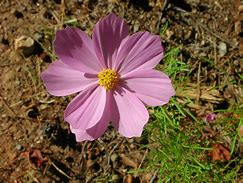

Ramlah bint Kuwaylid @bintkuwaylid
Coq au vin patate douce,bismillah and iftar mubarak.

Coq au vin patate douce,bismillah and iftar mubarak.
Sunset from the blessed walls of Makkah
Today's iftar menu...Nigerian spinach.